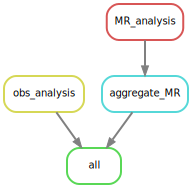
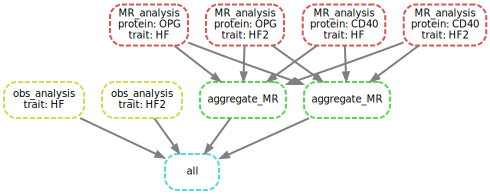

Mendelian randomization analysis
The required files are available from the snakemake
subdirectory inside the installed package or inst/snakemake
directory in the source package.
Steps to set up the environment are outlined in INSTALL.md,
while MendelianRandomization v0.6.0 is used together with a
bug fix in workflow/r/MR_functions.R. The workflow has been
heavily edited for simplicity, efficiency and generality. Currently
input/ contains data on CD40, OPG and heart failures – to
imitate additional trait, HF statistics are duplicated as HF2.
The code chunks below gives
output/MR_HF.csv (MR results) and
Obs_HF.csv (meta-analysis results based on observational
studies) and similarly for HF2.
module load miniconda3/4.5.1
export csd3path=/rds/project/jmmh2/rds-jmmh2-projects/olink_proteomics/scallop
source ${csd3path}/miniconda37/bin/activate
# 1. a dry run (-n).
snakemake --dry-run
# 2. run (-c on [all] available cores without --use-conda option as local packages are more up-to-date)
snakemake --cores
# 3. contrast with original output for OPG
# grep OPG output/MR_HF.csv | diff - <(grep OPG ${csd3path}/cvd1-hf/results/res_MR_aggregate.csv)
# 4. Some ancillary work in place.
snakemake --rulegraph | dot -Tsvg > output/rulegraph.svg
snakemake --dag | dot -Tsvg > output/dag.svg

Figure 1. Dependency graph of rules

Figure 2. Directed Acyclic Graph (DAG)